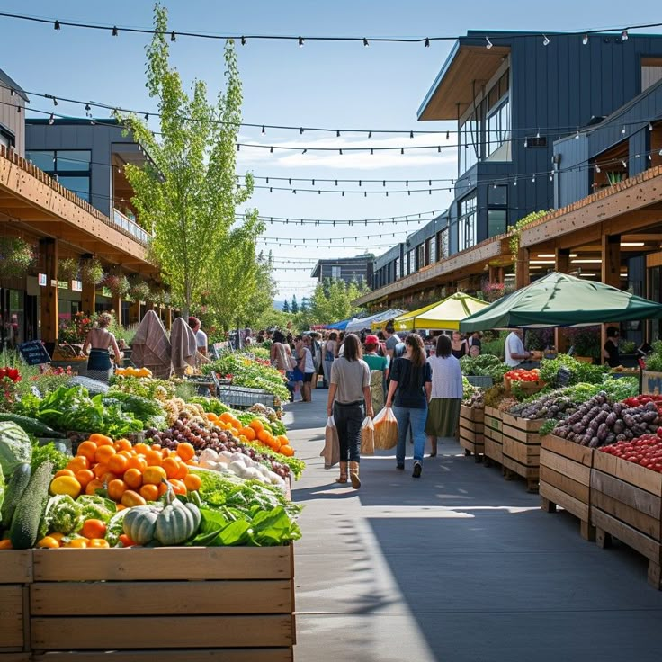
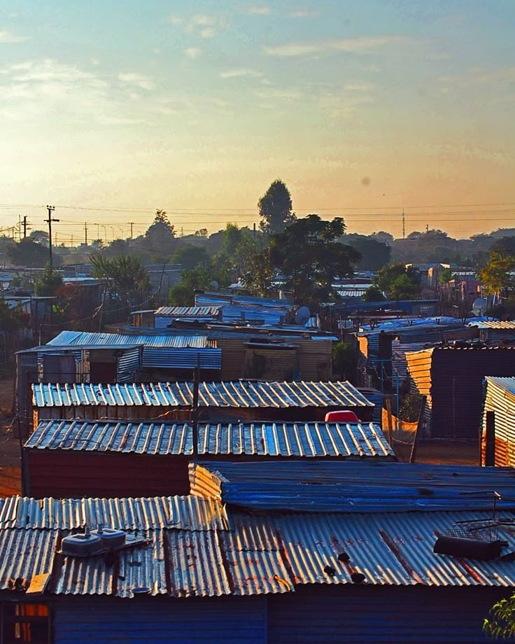

📸 Picha Halisi za Mabadiliko Yanavyoanza



Mpango wa kuifanya Segerea kuwa kitovu cha biashara Afrika Mashariki
Mpango huu unalenga kuifanya Tabata kuwa Dubai ya Tanzania, kwa kujenga majengo ya kisasa ya biashara, masoko ya kisasa, maeneo ya uwekezaji na kumbi za mikutano za kimataifa. Ndani ya moyo wa Segerea kutajengwa:
CCM na viongozi wa Segerea wameamua kuifanya biashara kuwa msingi wa maendeleo. Mpango huu unajumuisha:
Kufikia mwaka 2027, Tabata Segerea itakuwa kituo cha biashara kinachojulikana duniani – ikiunganisha wafanyabiashara, wawekezaji na mataifa mbalimbali kupitia miji ya kisasa, biashara bunifu, na teknolojia za kisasa.
“Kidumu Chama Tawala cha CCM – Maendeleo Kwa Wote!” ✊🏽